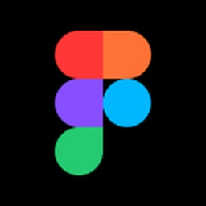

SMEs, D2C brands, and warehouse owners across Tier I–III Indian cities.
UI/UX designer
Seran K
I design digital products that make complex things feel simple for the people who use them.
I enjoy working where real-world messiness — logistics gaps, trust decisions, and information overload — meets a screen. My goal is to close the distance between what a product can do and what people can understand.
SPACE SHARERFind the right
space, faster.
space, faster.
Verified space⋯
Mahadev Logistics2,400 sq ft · Bengaluru
From ambiguity
to action.
to action.
Featured case study
Warehouse
Space Sharer
A marketplace that makes it easy for small businesses across India to find — and trust — flexible, verified warehouse space nearby.
01 The problem
Flexible warehousing sits between two imperfect choices: rigid long-term leases and managed fulfilment providers. There was no simple, trustworthy way to list or find verified space when a business needed it.
02 Research grounding
Buyers wanted more than a square-footage number. They needed confidence about security, access, equipment, insurance, and the people behind each listing before making contact.
03 The opportunity
Make operational readiness visible at the moment of discovery, while giving space owners an assisted path to publish complete, comparable listings.
Design decisions
Every screen earns
its place.
- Role-based entry“List Space” and “Find Space” paths make the first decision feel obvious.
- Requirement wizardA guided flow asks what users need before asking them to browse.
- Comparable cardsOperational signals sit beside size and price, not behind another click.
- Assisted onboardingOwners get a structured listing flow that reduces drop-off and incomplete profiles.
Key screens
A system for
confident choices.
From first search to first conversation, each touchpoint reduces uncertainty.
⌕ Search near Bengaluru
2,400+ sq ftVerifiedLoading access
Mahadev Logistics2,400 sq ft · ₹18 / sq ft
98%North Star Storage3,100 sq ft · ₹22 / sq ft
94%Search & filter
Discovery with operational readiness filters.
WAREHOUSE
Mahadev LogisticsYeshwanthpur · Bengaluru
✓ Verified24/7 access
₹43,200 / month
Listing detail
Trust signals, photos, and operational data in one view.
Interactive prototype
Walk through the complete Why Space experience.
How I work
Curious first.
Clear by design.
I move between the messy reality of a problem and the calm simplicity of a finished interface.
Understand
Listen to users, map the context, and find the friction behind the brief.
Shape
Turn patterns into a clear product direction through flows, structures, and prototypes.
Validate
Test early, learn quickly, and make the final experience feel inevitable.
About Seran
The person
behind the pixels.
Available immediately · Open to relocation
I’m Seran, a fresher UI/UX designer with a strong foundation in user research, information architecture, user flows, wireframing, and high-fidelity prototyping in Figma.
I translate user needs into clear, intuitive interfaces through a structured, research-driven process — with a particular interest in products that make everyday work simpler.
EducationBachelor of Engineering
Muthayammal Engineering College, Rasipuram
2022 — 2026
Design skills
UI/UX design · User journeys · Information architecture · Personas · Wireframing · Prototyping · Interaction design · Usability testing · Responsive web design
Tools

FigmaFigma Make
Google Stitch
Let’s connect
Let’s make it
feel simple.
Open to junior UI/UX design opportunities, collaborations, and thoughtful product problems.
serank2502@gmail.com